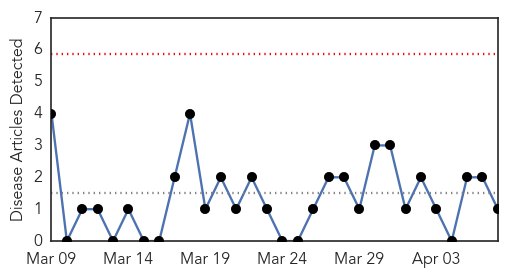
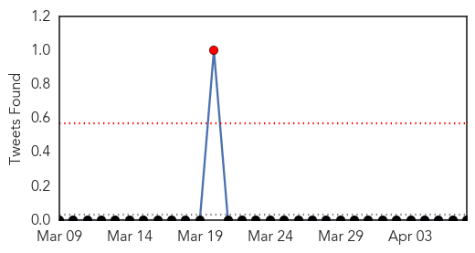
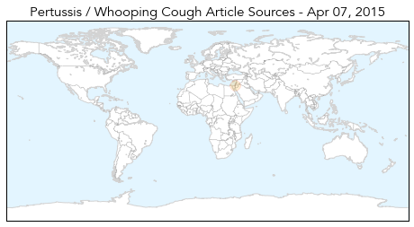
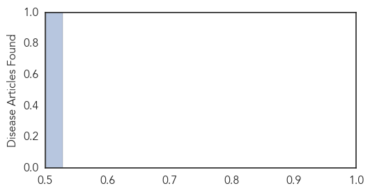

Dengue Fever
30-Day Web Trend
1 alerts, 0 warnings

30-Day Twitter Trend
1 alerts, 0 warnings

Article Locations

Article Confidences

Top Articles:
- 0.991
- Climate linked to mozzie movements
- 0.988
- 5 suspected cases of JE reported in city
- 0.981
- Australian scientists discover unique way to prevent dengue fever[1]- Chinadaily.com.cn
- 0.778
- CDA chief directs formations to take preventive measures against dengue
- 0.663
- New class of insecticides offers safer, more targeted mosquito control
- 0.572
- Venezuela health crisis grows with emigration of 13,000 doctors
Top Tweets:
-
No tweets found for Apr 07, 2015
Pertussis
30-Day Web Trend
0 alerts, 0 warnings

30-Day Twitter Trend
0 alerts, 0 warnings

Article Locations
Article Confidences
Top Articles:
Top Tweets:
-
No tweets found for Apr 07, 2015